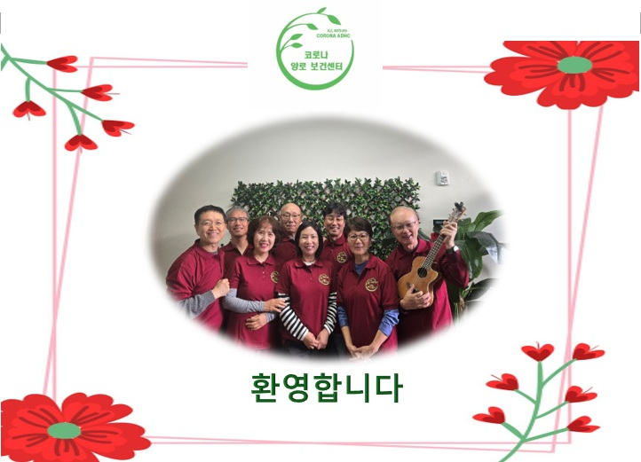

왜 저희인가
돌봄은 기술이 아니라, 마음입니다.
가족 같은 돌봄
한 분 한 분을 가족처럼 모십니다. 이름·생신·좋아하시는 음식까지 기억합니다. 어르신이 "여기가 편하다"고 말씀하시는 이유입니다.
의료 전문 팀 상주
자격 간호사(RN)가 매일 혈압·혈당을 체크하고 건강 상태를 기록합니다. 물리·작업치료사가 정기적으로 방문해 맞춤 재활을 진행합니다.
정갈한 한식이 있는 곳
정갈한 한식과 양식을 매일 번갈아 정성껏 제공합니다. 당뇨·저염·연식 식단은 영양사가 개인 맞춤으로 설계합니다.
저희 서비스
하루 종일, 어르신을 위한 모든 것.
일일 건강 체크
혈압·혈당·체온을 매일 측정하고, 건강 상태와 증상 변화를 꾸준히 기록·관리합니다.
물리·작업 치료
PT·OT 전문가가 낙상 예방과 근력 회복 프로그램을 개별 설계합니다.
메모리 케어
경증·중등도 치매 어르신을 위한 익숙한 음악·사진·루틴 중심 프로그램.
미술·음악 프로그램
매주 2~3회 미술·음악·서예 활동. 기억력·손 근력·감정 표현에 도움.
집 앞 픽업·드롭오프
코로나·리버사이드·노코·이스트베일·미라 로마 지역 무료 왕복 차량.
새 친구들과의 대화
외로움은 건강의 적입니다. 같은 언어로 마음을 나눌 수 있는 새 친구들과의 시간.
하루 일과
오전 8시 30분부터 오후 12시 30분까지,
정성이 담긴 하루.
식사
"여기 밥이 제일 맛있다"는 한 마디.
정갈한 한식과 양식을 매일 번갈아 정성껏 제공합니다. 영양사가 당뇨식·저염식·연식 식단을 개인별로 맞춤 설계해, 어르신께서 안전하고 편안하게 드실 수 있도록 준비합니다. 부모님께 드리고 싶은 집밥 — 저희가 매일 정성으로 차려드립니다.
- 아침·점심 매일 정성껏 제공
- 정갈한 한식 (잡채·국밥·나물·김치) 매일 포함
- 당뇨·저염·연식 등 특수 식단 맞춤
"부모님이 이 센터에 다니신 후부터 다시 웃으세요. 직원분들이 진짜 가족처럼 대해주세요. 저도 일하는 동안 마음이 한결 편해졌습니다."
팀 소개
환영합니다.
저희가 가족이 되어드립니다.
간호사 · 치료사 · 프로그램 선생님 · 영양사 · 운전 기사까지. All Nations Corona ADHC의 모든 팀원은 어르신을 내 부모님처럼 모시는 마음으로 함께합니다.
- 자격 간호사(RN) 상주 · 매일 건강 관리
- 한국어·영어·스페인어 3개 국어 응대 가능
- 우크렐라·노래교실 등 프로그램 전담 강사

돌보는 분께
당신도 쉴 자격이 있습니다.
"부모님이 하루 종일 혼자 계신 게 늘 마음에 걸립니다."
"일하는 동안에도 불안한 마음이 가시질 않아요."
"저도 잠깐 숨 돌릴 시간이 필요합니다…"
당신의 피로는 당연합니다. All Nations ADHC는 어르신뿐 아니라 가족에게도 '쉼'을 돌려드리는 시스템입니다.
지금 무료 상담자격 빠른 확인
3가지 질문이면,
메디칼 자격이 보입니다.
아래 세 질문에 "예"가 많으시다면 메디칼 무료 이용 가능성이 높습니다. 정확한 확인은 전화 한 통이면 끝납니다.
만 18세 이상이시고, 메디칼(Medi-Cal)에 가입되어 계신가요?
당뇨·고혈압·치매·관절염·뇌졸중 등 만성질환이 있으신가요?
식사·이동·일상 활동에 도움이 필요하신가요?
연락처 & 방문